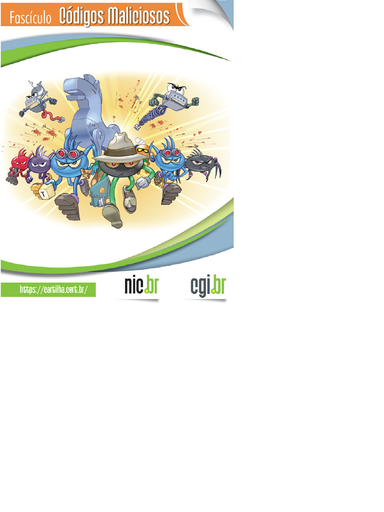

Virgílio Fries Muller
Professor responsável pela Disciplina. Os objetivos são: Fornecer aos estudantes os conhecimentos básicos sobre a Internet. Quem e como a utiliza. Abordar tópicos para permitir aos estudantes desenvolverem habilidades básicas: email, blogs, navegadores, pesquisa, feeds, FTP, downloads, rich media e social media. Explorar vários métodos de comunicação na Web.Objetivos específicos. Compreender impactos e tendências trazidas pela Internet. Conhecer e interpretar a terminologia das tecnologias empregadas na Internet. Compreender o papel de governos, instituições e empresas que viabilizam a Internet tais como: W3C, NIC.br e CGI.br. Explicar o relacionamento entre computadores clientes e servidores estabelecendo as diferenças de objetivos, hardware, localização e manutenção. Ser capaz de diagramar esquemas de estruturas de redes de computadores mundiais, metropolitanas e locais (WAN, MAN, e LAN). Conhecer o uso geral dos protocolos da Internet: SMTP, FTP, IP, TCP, UDP e o modelo de referência OSI. Explicar funcionamento dos softwares de busca (search-engines). Compreender e aplicar os operadores booleanos para buscar conteúdos na Internet. Definir software como serviço. Identificar tipos de sítios Internet: sítios estáticos / dinâmicos, aplicativos, etc. Definir RSS e utilizar feed para agregar ferramentas em informações coletadas. Usar redes sociais para ampliar informações. Criar e utilizar Blog e RSS/Atom feeds. Criar um podcast. Identificar os métodos para coletar informações na Internet (tanto os legais e éticos quanto os desonestos e ilegais). Identificar métodos de proteção e de uso seguro da Internet. Diferenciar http de https. Localizar legislação aplicada a Internet principalmente a que trata de propriedade intelectual. Pesquisar tecnologias relacionadas à Internet e postar semanalmente no Blog do curso a linha do tempo da história da Internet
Cartilha de Segurança
Códigos malíciosos, também conhecidos como pragas e malware, são programas desenvolvidos para executar ações danosas e atividades maliciosas em equipamentos, como computadores, modems, switches, roteadores e dispositivos móveis (tablets, celulares, smartphones, etc).
Um atacante pode instalar um código malicioso após invadir um equipamento ou exporando alguma vulnerabilidade existente nos programas nele instalados.
Tipos mais conhecidos:
Vírus: Programa ou parte de um programa de computador, normalmente malicioso, que se propaga inserindo cópias de si mesmo e se tornando parte de outros programas e arquivos.
Cavalo de Tróia: Programa que, além de executar as funções para as quais foi aparentemente projetado, também executa outras funções, normalmente maliciosas, e sem o conhecimento do usuário.
Ransomware: Programa que torna inacessíveis os dados armazenados em um equipamento, geralmente usando criptografia, e que exige pagamento de resgate para restabelecer o acesso ao usuário.
Backdoor: Programa que permite o retorno de um invasor a um equipamento comprometido, por meio da inclusão de serviços criados ou modificados para este fim.
RAT (Remote Access Trojan): ou trojan de acesso remoto, é um programa que combina as características de trojan e de backdoor, já que permite ao atacante acessar o equipamento remotamente e executar ações como se fosse o usuário.
Worm: Programa capaz de se propagar automaticamente pelas redes, explorando vulnerabilidades nos programas instalados e enviando cópias de si mesmo de equipamento para equipamento.
Bot: Programa similar ao worm e que possui mecanismos de comunicação com o invasor que permitem que ele seja remotamente controlado.
Spyware: Programa projetado para monitorar as atividades de um sistema e enviar as informações coletadas para terceiros.
Rootkit: Conjunto de programas e técnicas que permite esconder e assegurar a presença de um invasor ou de outro código malicioso em um equipamento comprometido.
Mais informações:Clique aqui